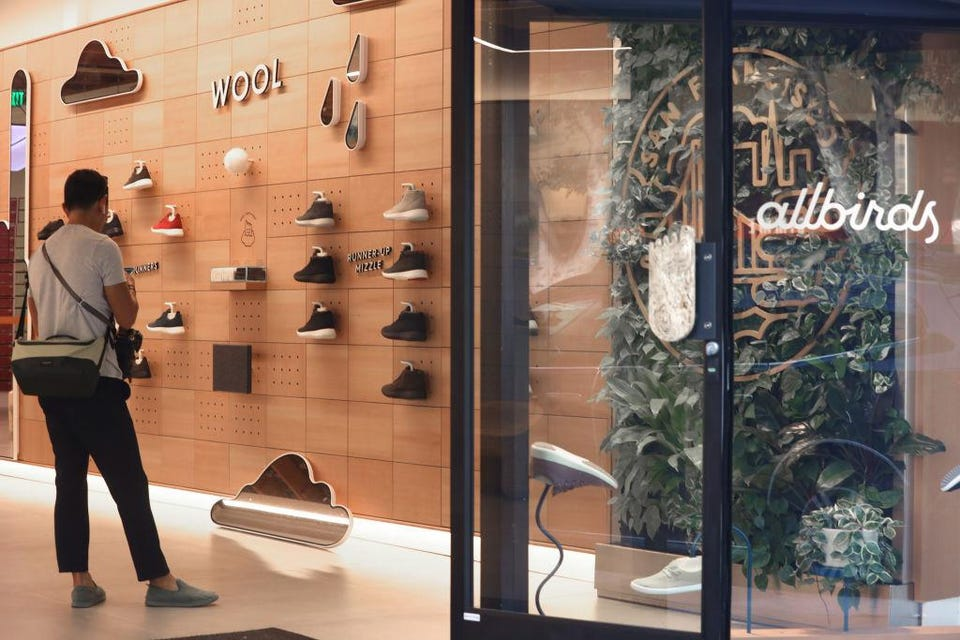

Sep 24, 2021,06:30am EDT|3,942 views
‘Enthusiastic Entrepreneurs’: Pre-IPO Statements On Profitability Prove To Be Larger Than Real Life


More than one in four of the 50 largest venture-backed companies to go public since 2019 made assertions about their profitability that don’t appear to line up with their later IPO-related disclosures to the SEC, a new Forbes analysis has found.
A llBirds burst onto the fashion scene five years ago with its wool fabric shoes and proclamations of being environmentally conscious. It quickly won fans in Silicon Valley too, raising $200 million from venture investors.
Along the way, much of the hype went beyond the trendy shoes, centering on Allbirds’ financial success. By CEO Joey Zwillinger’s account, the company had been “profitable since basically day one” — a remark he made to the Wall Street Journal in 2018. Two years later, he reinforced the message, telling TechCrunch, “We’ve been profitable for most of our existence.”
But when the company filed to go public last month, Zwillinger’s assertions were at odds with disclosures made by the company to the Securities and Exchange Commission. In fact, the company stated in a filing ahead of its planned IPO that it had “incurred significant net losses since inception and anticipate that we will continue to incur losses for the foreseeable future.” AllBirds declined to comment on the record because it is in a quiet period.
AllBirds is one of numerous startups whose executives got ahead of themselves as they ramped up to go public, according to a Forbes analysis. Leaders of the companies, including Palantir, Lyft, Oscar Health and others, made oral and written claims about profitability in the media or at public events that didn’t sync up with later company filings to the SEC, known as S-1 or F-1 documents. In all, executives at more than one in four of the 50 biggest companies to go public since January 2019 appear to have made such statements, Forbes found.
“It’s enthusiastic entrepreneurs...who have such faith in themselves and what they've created that they find it hard to switch off that mode when you're talking about factual things like profitability,” says Suraj Srinivasan, an accounting and management professor at Harvard Business School.
For example, Softbank-backed VTEX, an online store builder for enterprise companies that went public in July and is now valued at over $4 billion, disclosed in its F-1 filed in June that it had incorrectly stated in 2020 that it had been profitable in that year. In fact, it had lost $800,000, and its profit claims, it said, could prompt lawsuits against the company. “Before the IPO, VTEX did not report its financials in accordance with International Financial Reporting Standards,” the company said in a statement to Forbes, “therefore, the way management viewed the company’s profitability at that time was from a perspective of cash provided by operating activities, not in a technical term but in a broader sense."
Other companies said that, when their executives spoke of profitability in broad and optimistic terms in the years before their IPOs, they were relying on alternative profitability metrics such as “adjusted EBITDA” or “structural profitability.” A spokesperson for Peloton, for instance, whose CEO said the company was profitable while it was private before the company stated otherwise in an IPO-related filing to the SEC, explained the discrepancy this way: "We were obviously a private company in 2018 and internal company definitions of profitability often differ from [Generally Accepted Accounting Principles].”
In documents filed with the SEC ahead of its April IPO, cryptocurrency exchange Coinbase disclosed that it generated a net loss of $30 million in 2019—a fact that seemed to contradict comments made by CEO Brian Armstrong at an event hosted by Vanity Fair in October 2019 in which he said the company was profitable that year and in the two prior years. In a statement to Forbes, a Coinbase spokesperson said that “during 2019, we were profitable on an adjusted EBITDA basis.” The spokesperson added that Coinbase was using an accounting practice that calculated its digital assets at fair value at the time of Armstrong’s comment, and that when it prepared for its IPO, it calculated those assets at cost, which swung the company into the red. The Vanity Fair article did not mention the type of accounting practice to which the company refers.
Such discrepancies rarely impact the companies going forward. That is especially true with Coinbase, which posted a profit of $322 million in 2020, before it went public in April, and reported an astonishing $1.6 billion net profit in the second quarter of this year. It now has a market cap of $50 billion.
But that’s not always the case. Concerns about exaggerated profitability helped contribute to the collapse of WeWork’s IPO in 2019. For years, the coworking company and its CEO Adam Neumann spun rosy stories of vast market potential, and invented new profit metrics such as “Community-Adjusted EBITDA.” Based in part on these claims, WeWork’s thousands of employees took equity in exchange for lower salaries, in the hope of cashing out when the company went public. But things began to unravel ahead of its IPO in part because WeWork’s true financial position disclosed to the SEC ran counter to earlier claims made by executives to journalists that the company was profitable.
In September 2019, WeWork withdrew its IPO plans, its valuation plummeted, and most employees' shares became worthless. “WeWork will become a public company, but we can only IPO once, and we want to do it right,” former WeWork executives Artie Minson and Sebastian Gunningham said in a statement at the time. In March, the company announced renewed plans to go public through a SPAC deal at less than 20% of its 2019 valuation.
“Employees are the ones who I worry about most,” says Tripp Jones, a partner at Uncork Capital, who has served on more than a dozen company boards. “Because they will join companies based on statements around profitability.”
“If the company still goes public and makes money for everybody, no one will care. There's no consequences”
Robert Siegel, Stanford Graduate School of Business lecturer
Some companies have suggested profitability was closer than it turned out to be. Buzzy health insurance firm Oscar, co-founded by Josh Kushner and backed by Alphabet, drummed up enthusiasm for its financial performance in 2018 when CFO Brian West told CNBC : “Before you know it, we’ll be profitable...it’s around the corner.”
But that appears to have been wishful thinking. When Oscar filed to go public in March, it disclosed that its losses grew from $261 million in 2019 to $407 million in 2020. “The comment made by Brian West was regarding gross margin related to the ratio of premiums to medical claims for our insurance business, which we refer to as our Medical Loss Ratio, or MLR,” an Oscar spokesperson said in an email to Forbes. “This is a common metric provided by healthcare insurance companies.”
At times, investors have added to the overly cheerful narrative. Navin Chaddha, an investor in Poshmark, told Vogue Business in a 2019 company profile that the used-fashion marketplace was “a very well-run company from a cash-flow perspective... Most people lose tons of money. And we don't.” But Poshmark’s S-1 showed the company’s losses more than tripled to $49 million that year. Poshmark declined to comment. Chaddha did not respond to a request for comment.
The SEC has the power to sue and fine privately held companies and their executives if they make false claims directly to investors. But the agency rarely takes action when corporate leaders exaggerate their profitability in media interviews or public appearances because such claims are so widespread—and because the agency doesn’t have the resources to police every statement a CEO makes to a news outlet, says David Chase, a former SEC attorney who now defends clients in SEC cases that often involve scrutiny of public statements. The SEC did not respond to a request for comment. “That recipe of not being perhaps guided by experienced securities transactional counsel, coupled with companies that are desperate for capital, you get these statements that oftentimes veer from the truth,” Chase says.
The agency is most likely to take action if executives make false statements in financial filings, which are intended to be the legal statement of record for investors. Last month, for instance, Manish Lachwani, a co-founder and former CEO of mobile-app testing startup Headspin, was charged by the Justice Department with wire fraud and securities fraud. The SEC filed an accompanying civil complaint. The criminal complaint says that an independent accounting firm found that the company had overstated its revenue by more than $50 million and made false claims about profitability while raising money from investors including Tiger Global Management and Dell Technologies Capital. Lachwani is facing up to 20 years in prison and penalties up to $5 million. He has pleaded not guilty to the Justice Department charges; his response to the SEC is pending. “There are terabytes of additional data that will show that Mr. Lachwani never concealed the true financial condition of the company from its private investors,” John Hemann, an attorney representing Lachwani, said in a statement.
In the meantime, executives continue to cheer on their companies in the years before announcing their intentions to go public, often using whatever profitability metric will make the company look the best. “Many CEOs [of private companies] will colloquially talk about profitability for what in their mind, they've been trained to care about, which is free cash flow,” says Tom Loverro, an investor at venture capital firm IVP.
Warby Parker said in 2018 that it would be profitable that year, news that was covered by several publications. While The Business of Fashion reported that the eyewear company would be profitable on an EBITDA basis, the New York Times reported that it would be “the retailer’s first full year of turning a profit,” citing co-CEO Dave Gilboa. But when it filed to go public last month, Warby Parker disclosed that it had “a history of losses, and we may be unable to achieve or sustain profitability” and made no mention of delivering a profit. It posted a $56 million net loss in 2020. Warby Parker declined to comment as it is in a quiet period.
For both Warby Parker and AllBirds, like others before them, their profit statements are unlikely to affect their bottom lines, or their stocks’ performances: after all, their glasses and shoes, respectively, are popular among consumers. “If the company still goes public and makes money for everybody, no one will care,” says Robert Siegel, a lecturer in management at Stanford Graduate School of Business. “There’s no consequences.”
Enthusiastic Entrepreneurs
Using a list compiled by Pitchbook of the 50 largest IPOs of venture-backed startups that went public since January 2019 (excluding biotech), Forbes found that executives at 13 of the companies made rosy claims about profitability. Their IPO-related filings to the SEC told a different story.
Coinbase , Cryptocurrency Exchange
Claim: “We were profitable in 2018 and in 2017” and remained profitable after that, CEO Brian Armstrong told Vanity Fair in October 2019.
Reality: Coinbase lost $30 million in 2019.
Company Response: "During 2019, we were profitable on an adjusted EBITDA basis." Coinbase added that it was using an accounting practice that calculated its digital assets at fair value, and that when it prepared for its IPO, it calculated those assets at cost, which swung the company into the red.
Uber , Ride-hailing, food delivery
Claim: Former CEO Travis Kalanick told Canadian publication BetaKit that “We’re profitable in the USA."
Reality: Uber incurred significant losses every year since inception, "including in the United States and other major markets,” according to the company’s S-1 filing.
Company Response: Did not respond.
Research contributed by Helen Popkin
Follow me on Twitter or LinkedIn. Send me a secure tip.
David JeansI'm a staff reporter at Forbes covering tech companies. Follow me on Twitter at @davidjeans2 and email me at djeans@forbes.com